酶浓度 [E] 在底物充足的前提下，速率与酶浓度成正比——这是最直接的关系。
CHAPTER 10 · ENZYME KINETICS
酶动力学
第 9 章说酶“高效、专一、可调控”，但都是定性的。这一章把它们转成可以测量的数字：Km、Vmax、kcat、kcat/Km 各代表什么，三种可逆抑制剂怎样在双倒数图上留下不同的“指纹”，别构酶为什么必须换一套方程来描述。
米氏方程推导Km/Vmax/kcat双倒数作图三类可逆抑制不可逆抑制Hill 方程协同性
1. 影响酶促反应速率的各种因素
酶促反应速率和非酶促反应一样，一般以单位时间内底物或产物浓度的变化值来表示。课件列出五类影响因素：
先建立两个贯穿全章的核心概念：米氏常数 Km 与 最大反应速率 Vmax；它们由 米氏方程联系在一起。
底物浓度 [S] 关系最复杂，呈饱和曲线（米氏酶）或 S 形曲线（别构酶）。本章第 2–4 节专门讨论。
反应温度 呈钟形曲线，存在最适温度（第 9 章已讨论机制）。
反应介质的 pH 与离子强度 pH 呈钟形曲线，存在最适 pH。离子强度影响活性中心的静电环境与底物结合。
有无抑制剂存在 抑制剂是本章第 5–6 节的主题，也是药物设计的核心。
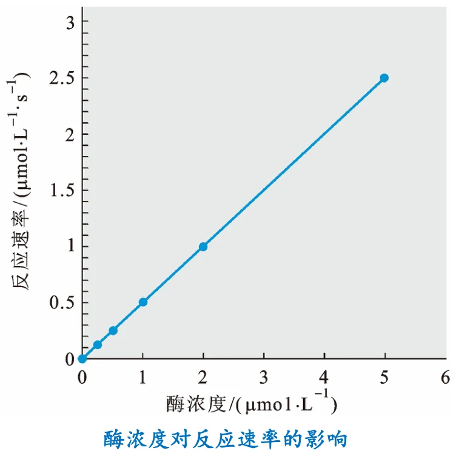
图源：第10章《酶动力学》PPT，第 4 页。酶浓度对反应速率的影响——在底物过量的条件下呈直线。
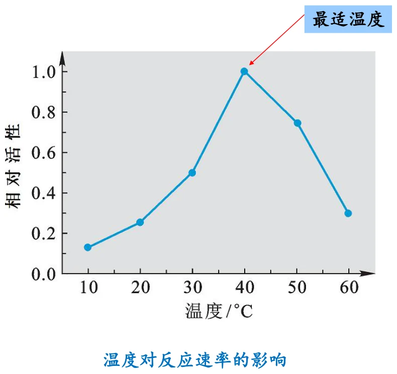
图源：第10章 PPT 第 5 页。最适温度。
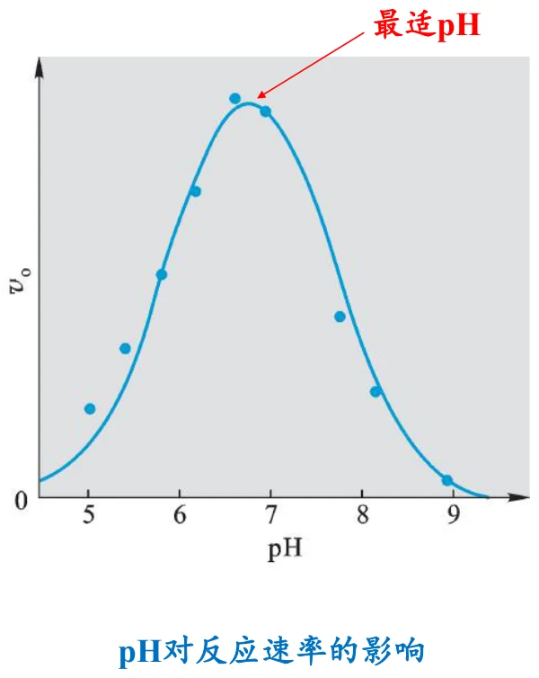
图源：第10章 PPT 第 6 页。最适 pH。
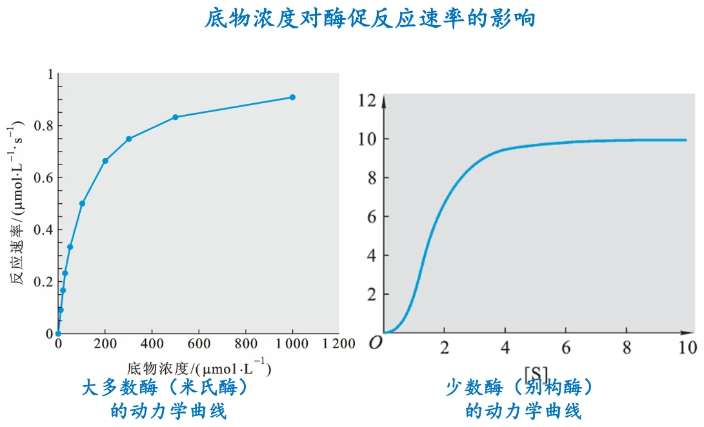
图源：第10章 PPT 第 7 页。左：大多数酶（米氏酶）的动力学曲线为双曲线；右：少数酶（别构酶）为 S 形曲线。这一页是整章的入口——两种曲线形状对应两套完全不同的数学描述。
[S] 曲线的形状本身就是信息
把 [S] 曲线当成“测出来的一条线”是浪费。曲线的形状直接告诉你这个酶属于哪一类：双曲线意味着各底物结合位点相互独立（米氏酶），S 形曲线意味着位点之间存在正协同（别构酶）。所以实验上第一件事不是算 Km，而是先看曲线长什么样。
2. 米氏方程的推导
酶反应动力学最简单的模型由 Leonor Michaelis 和 Maud Menten 于 1913 年提出，因此又名 Michaelis-Menten 模型或 M-M 模型。当年 Michaelis 的论文合作者 Menten 是一位女性科学家，她在实验技术上贡献极大。
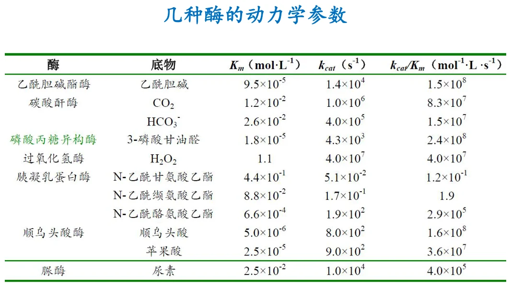
图源：第10章 PPT 第 12 页。几种酶的动力学参数——不同酶的 Km 值可以相差几个数量级，这个差异本身就是生理意义的来源。
2.1 推导前的三个前提
只测反应刚开始的速率（v₀），此时[S] 的变化可以忽略，而且没有产物积累造成的逆反应与产物抑制。这是所有酶动力学测量的标准做法。
即 [ES] 不随时间变化（稳态近似，steady state）。注意“不变”不等于“很少”——ES 在持续生成和分解，只是两者速率相等，浓度维持恒定。
反应速率与反应物浓度的乘积成正比，可以写出每个基元步骤的速率表达式。
2.2 推导过程
考虑一个单底物-单产物反应，酶与底物先结合成 ES，再转变为产物并释放酶：
E + S ⇌ ES → E + P
用 k₁ 表示 ES 形成的速率常数，k₋₁ 表示 ES 解离回 E + S 的速率常数，k₂ 表示 ES 转变为产物的速率常数（催化常数）。
第一步：写出 ES 的形成与解离速率。设 νf 为 ES 形成的速率，νd 为 ES 解离的速率。ES 的解离有两条途径——解回原料，或者前进到产物：
νf = k₁[E][S] νd = k₋₁[ES] + k₂[ES] = (k₋₁ + k₂)[ES]
第二步：应用稳态近似。稳态时 ES 形成与解离速率相等，νd = νf：
k₁[E][S] = (k₋₁ + k₂)[ES] …①
第三步：引入酶的总浓度守恒。设 [Eₜ] 为酶的总浓度，[E] 为游离酶浓度，[ES] 为与底物结合的酶浓度，则：
[Eₜ] = [E] + [ES] 即 [E] = [Eₜ] − [ES]
代入 ① 式：
k₁([Eₜ] − [ES])[S] = (k₋₁ + k₂)[ES]
整理并解出 [ES]：
[ES] = k₁[Eₜ][S] / (k₋₁ + k₂ + k₁[S]) = [Eₜ][S] / (Km + [S])
其中定义了米氏常数：
Km = (k₋₁ + k₂) / k₁
Km 的定义要点
Km 不是简单的解离常数。只有当 k₂ ≪ k₋₁（即催化这一步远慢于解离，ES 大部分时间在“来回结合”而不是前进）时，Km ≈ k₋₁/k₁ = Ks，也就是真正的解离常数。这个区别在考试中经常被考察：Km 是操作定义上的常数，Ks 是热力学意义上的解离常数，两者只有在特定条件下才相等。
2.3 得到米氏方程
酶促反应的初速率就是产物形成的速率：
v = k₂[ES] = k₂[Eₜ][S] / (Km + [S])
当 [S] → ∞ 时，酶被底物饱和（所有酶都以 ES 形式存在），此时速率达到最大反应速率 Vmax：
Vmax = k₂[Eₜ]
代回并整理，就得到米氏方程：
v = Vmax[S] / (Km + [S])
这个方程的形状说明了什么
米氏方程是 [S] 的双曲线。[S] 很小时，分母近似为 Km，v ≈ (Vmax/Km)[S]，速率与 [S] 成正比——一级动力学；[S] 很大时，分母近似为 [S]，v ≈ Vmax，速率与 [S] 无关——零级动力学。这就是下一节要讲的“双重性”。Vmax 在数学上永远无法达到，只能渐近逼近——这一点在后面为什么需要双倒数作图时会变得关键。
3. 米氏方程的四组参数
课件把米氏方程的解读分成四块，每一块都对应一个可以测量的量。
3.1 Km：米氏常数
Km 是酶反应初速率为 Vmax 一半时底物的浓度。这个定义可以直接用米氏方程验证：令 v = Vmax/2，解得 [S] = Km。
在一定条件下，可以用 Km 表示酶与底物的亲和力：
| Km | 亲和力 | 达到 Vmax/2 所需 [S] |
|---|---|---|
| 越大 | 越低 | 越高 |
| 越小 | 越高 | 越低 |
为什么 Km 越小亲和力越高
因为 Km 是“需要多少底物才能把酶用到一半速度”的度量。Km 小意味着很少的底物就够用了，说明酶抓底物抓得紧。这个直觉比死记“Km 与亲和力成反比”更可靠。注意课件写的是“在一定条件下”——正是上面说的 k₂ ≪ k₋₁ 条件。
Km 还有一个重要的应用：帮助判断体内一个可逆反应进行的方向。如果酶对底物的 Km 值小于对产物的 Km 值，则反应有利于正反应；否则有利于逆反应。
这个判据的直觉
同一个酶催化可逆反应，两个方向各有自己的 Km（记为 Km(S) 与 Km(P)）。Km 小的一侧意味着该物质在较低浓度下就能把酶“喂饱”，因此酶更容易朝着消耗这一侧的方向工作。反过来也可以理解为：Km 小的物质更容易被酶抓住并转化。所以 Km(S) < Km(P) 时正反应占优。
3.2 Vmax：最大反应速率
Vmax 也是酶的特征常数，但随着酶浓度的变化而变化。这一点很重要：Vmax 并不像 Km 那样是酶的内在属性——它正比于酶量（Vmax = k₂[Eₜ]）。所以在比较不同实验的 Vmax 时，必须先确认酶浓度相同。
3.3 kcat：催化常数
kcat 称为酶的催化常数，也叫转换数或周转数。它指在单位时间内，一个酶分子将底物转变成产物的分子总数，单位是 s⁻¹。详见词条 转换数。
如果一个酶遵守米氏方程，则：
kcat = k₂ = Vmax / [Eₜ]
所以 kcat 的物理意义是单个酶分子的“工作速度”——每秒钟能处理多少个底物分子。它把宏观测得的 Vmax 转换成了单分子层面的指标，因此可以用来比较不同酶（甚至不同来源的同一种酶）的本征催化能力。
3.4 kcat/Km：催化效率
kcat/Km 通常被用来衡量酶的催化效率，还可以反映一个酶的“完美程度”。大的 kcat 和/或小的 Km 将给出大的 kcat/Km 值。
为什么 kcat/Km 才是真正的效率指标
单看 kcat 会漏掉一半信息：一个酶可能转化得很快（kcat 大），但需要极高的底物浓度才能把酶喂饱（Km 大）。kcat/Km 相当于“在底物浓度很低时，酶把底物转成产物的效率”——因为低 [S] 下 v ≈ (kcat/Km)[E][S]，此时速率常数就是 kcat/Km。它同时包含了“抓得紧”（小 Km）和“转得快”（大 kcat）两个方面。
kcat/Km 还有一个理论上限：酶的催化速度不可能超过底物扩散到活性中心的速度，这个扩散限制约在 10⁸–10⁹ M⁻¹s⁻¹ 量级。达到这个上限的酶称为“完美酶”（如碳酸酐酶、超氧化物歧化酶）——此时每遇到一个底物分子就催化一次，效率已无提升空间。
4. 米氏方程的双重性
同一个方程在两种极端条件下退化成两种不同级的动力学，这称为米氏方程的双重性。
| 条件 | 简化结果 | 动力学级数 | 物理含义 |
|---|---|---|---|
| [S] ≪ Km | v = (Vmax/Km)[S] | 一级动力学 | 速率与底物浓度成正比。酶远未饱和，游离酶充足，速率受“底物多久碰到酶”限制 |
| [S] ≫ Km | v = Vmax | 零级动力学 | 速率接近最大值，继续增加 [S] 也不能再提高。酶已被底物饱和，速率受“酶处理一个底物需要多久”限制 |
图源：第10章 PPT 第 7 页（同第 1 节）。曲线的左下段近似直线（一级），右上段趋于水平（零级）——双曲线本身就是两种极端动力学的连接。
为什么要区分这两种极限
这不是数学游戏，而是实验设计的基础。想比较不同酶的 kcat/Km，必须在 [S] ≪ Km 的条件下测；想比较 Vmax，必须在 [S] ≫ Km（饱和）条件下测。选错浓度区间，得到的“动力学参数”就没有意义。同样的区分在临床检验中也很实用：测定血清酶活时通常让底物过量（零级条件），这样测得的速率才正比于酶量，从而反映组织损伤程度——这正是第 9 章诊断指标能够成立的前提。
5. 米氏方程的线性转换：双倒数作图
直接用 v 对 [S] 作图得到的是曲线。虽然从图上也能读出 Km 和 Vmax，但存在两个实际困难：
- Vmax 是渐近线，永远达不到，只能靠肉眼外推，误差很大。
- 实验误差必然存在。只要数据点偏离真实位置，就很难画出完美曲线；而在同样条件下画直线要容易得多，且直线的偏差更容易判断。
因此需要把米氏方程线性化。取倒数：
1/v = Km/Vmax · 1/[S] + 1/Vmax
这是一条直线。以 1/[S] 为横轴、1/v 为纵轴作图，得到双倒数作图（Lineweaver-Burk 作图）：
| 图上的量 | 等于 | 怎样读出参数 |
|---|---|---|
| 纵截距 | 1/Vmax | 取倒数得 Vmax |
| 横截距 | −1/Km | 取绝对值倒数得 Km |
| 斜率 | Km/Vmax | 由斜率与截距可交叉验证 Km |
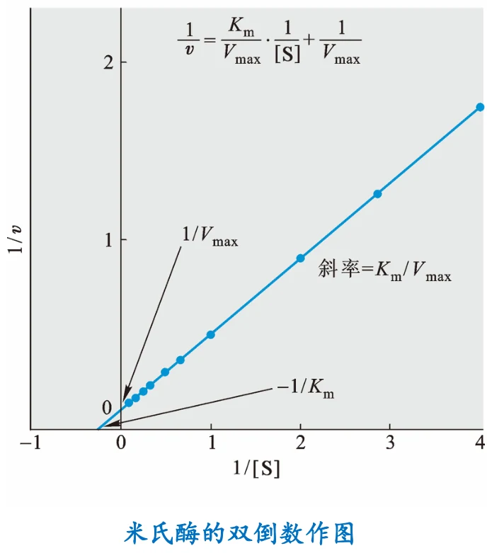
图源：第10章 PPT 第 15 页。米氏酶的双倒数作图——三个参数全部落在坐标轴截距和斜率上，可以一次读出。
双倒数作图的优雅之处，以及它的代价
优雅之处：Km 和 Vmax 不再需要外推到无穷远，而是变成两个坐标轴上的截距，直接读出。
代价：取倒数会放大低 [S] 数据的误差。因为 1/[S] 在 [S] 小时会变得很大，而小 [S] 下的速率测量本来误差就大；取倒数后这些点被推到图的最右端，对直线斜率的影响被放大。所以严格做法应使用 Eadie-Hofstee 或 Hanes 作图，或用非线性回归直接拟合米氏方程。但双倒数作图在判断抑制类型时不可替代——因为不同抑制类型给出的直线位置变化非常有特征（见下一节）。
6. 酶抑制剂作用的动力学
抑制剂按结合方式先分成两大类，这个划分决定了能否通过物理方法恢复活性。
| 类型 | 结合方式 | 能否去除 | 后果 |
|---|---|---|---|
| 可逆性抑制剂 | 以次级键与酶可逆结合 | 能——用透析或超滤即可去除，酶恢复活性 | 降低酶的有效活性，但酶量不变 |
| 不可逆性抑制剂 酶灭活剂 | 以强的化学键（通常是共价键）与酶不可逆结合 | 不能——一旦失活不可逆转 | 导致酶有效浓度降低。想恢复活性，唯一手段是补充新酶 |
这个划分的实用含义
可逆与不可逆的差别不在于“结合得牢不牢”，而在于有没有形成共价键。这直接决定了治疗策略：可逆抑制剂的效果取决于浓度，停药后活性可恢复；不可逆抑制剂的效果取决于“被修饰掉多少酶分子”，需要机体重新合成酶才能恢复。阿司匹林不可逆地乙酰化 COX，因此低剂量就能长期抑制血小板功能——因为血小板没有细胞核，无法重新合成酶，药效持续整个血小板寿命（约 7–10 天）。这是理解给药方案的关键。
6.1 三类可逆性抑制剂
| 类型 | 结合对象 | Km | Vmax | 双倒数图的特征 |
|---|---|---|---|---|
| 竞争性 competitive | 只与游离酶 E 结合（在活性中心，与底物竞争） | 提高 | 不变 | 纵截距不变（1/Vmax 不变），横截距向原点靠近（−1/Km 绝对值变小），直线绕纵轴交点旋转 |
| 非竞争性 noncompetitive | 既能与 ES 结合，又能与游离酶 E 结合 | 不变 | 降低 | 横截距不变（−1/Km 不变），纵截距增大（1/Vmax 变大），直线绕横轴交点旋转 |
| 反竞争性 uncompetitive | 只能与 ES 结合，不能与游离酶结合 | 降低 | 降低 | 横纵截距同时按相同比例变化，得到一组平行线 |
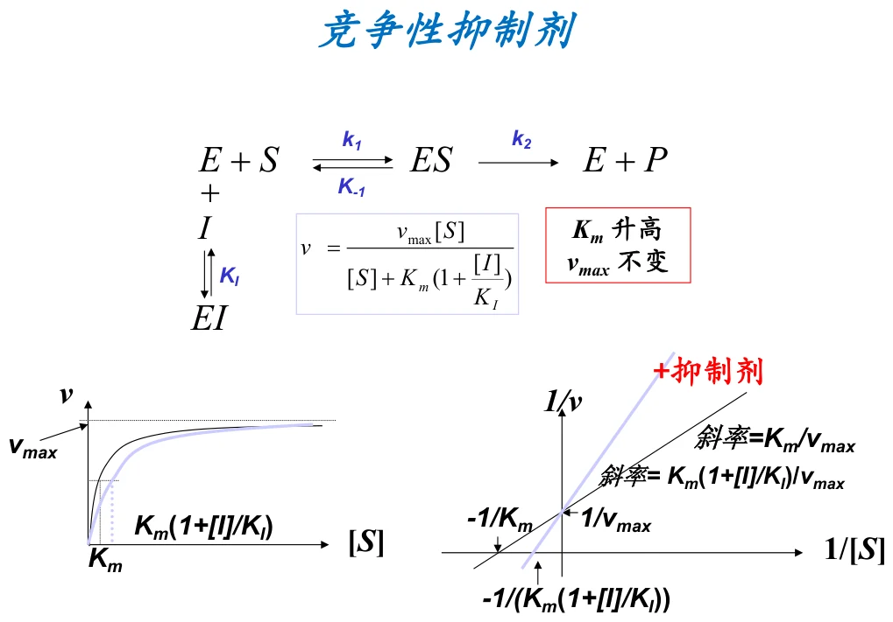
图源：第10章 PPT 第 20 页。竞争性抑制剂：Km 升高，Vmax 不变。有抑制剂时表观 Km 变为 Km(1 + [I]/K_I)，斜率相应变为 Km(1 + [I]/K_I)/Vmax，但纵截距 1/Vmax 不变。
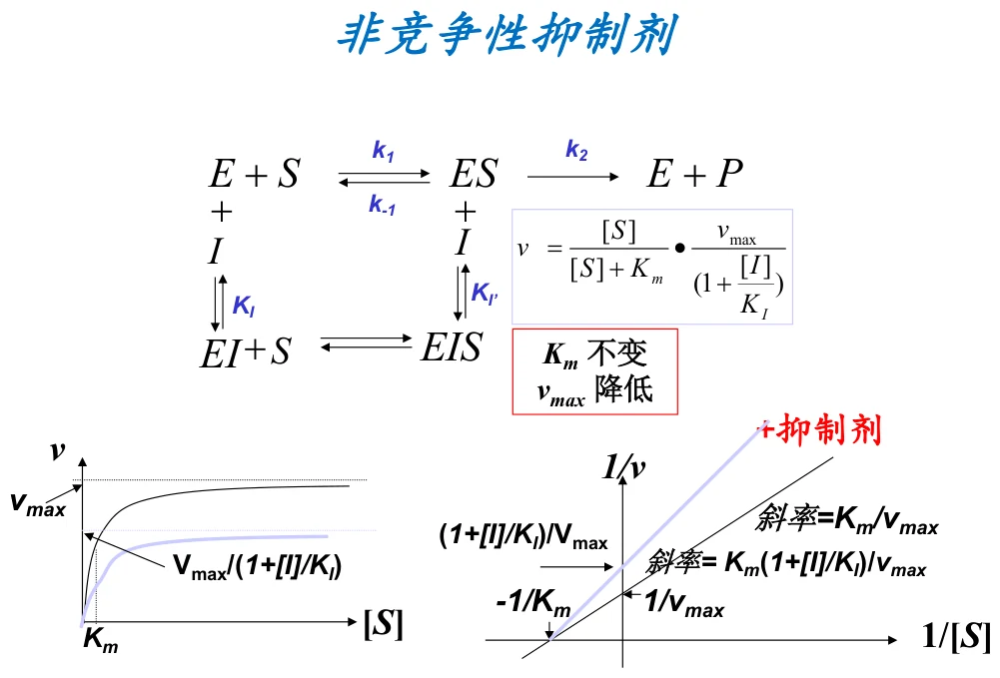
图源：第10章 PPT 第 21 页。非竞争性抑制剂：Km 不变，Vmax 降低。
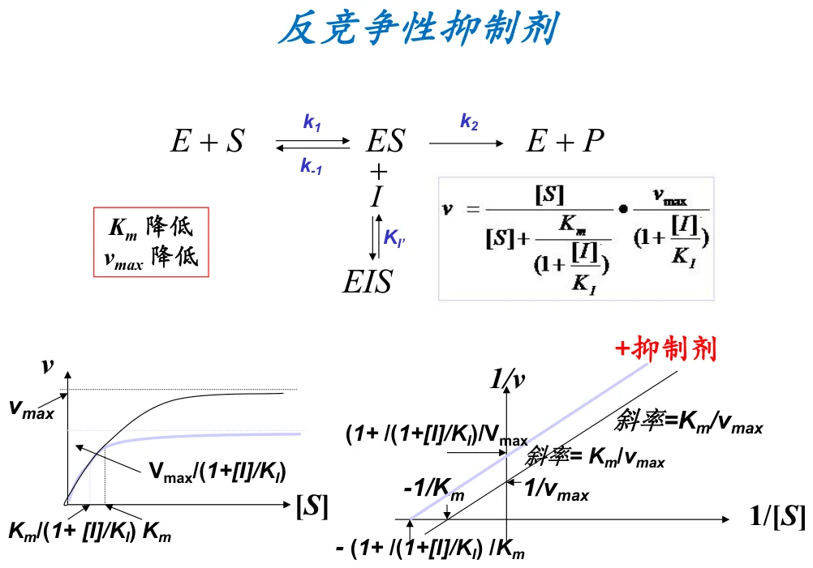
图源：第10章 PPT 第 22 页。反竞争性抑制剂：Km 降低，Vmax 降低。表观 Km 变为 Km/(1 + [I]/K_I′)，表观 Vmax 变为 Vmax/(1 + [I]/K_I′)，两者按同一因子变化，因此双倒数图给出一组平行线。
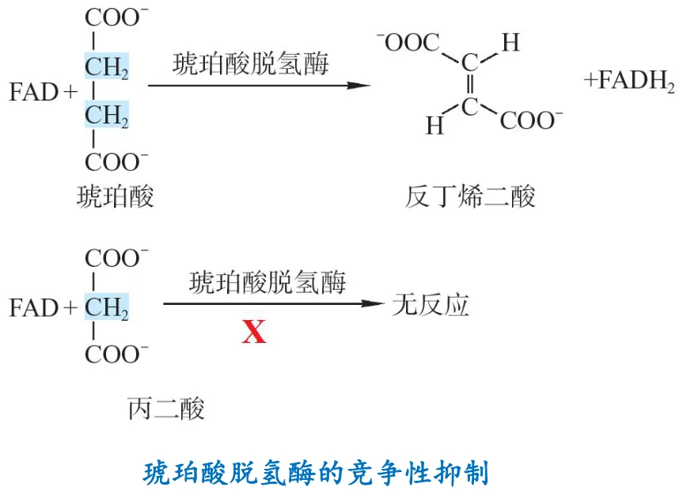
图源：第10章 PPT 第 19 页。琥珀酸脱氢酶的竞争性抑制——丙二酸与琥珀酸结构相似，因此能占据同一活性中心。这是“与底物结构相似”这一类竞争性抑制剂的经典例子。
怎样三次记住这三张图
不要背图，从“抑制剂结合谁”推出参数变化：
① 竞争性——只结合 E：抑制剂和底物抢同一个位点。提高 [S] 就能把抑制剂挤掉，所以只要底物足够多，Vmax 仍然能达到 ⇒ Vmax 不变。但在同样的 [S] 下速率降低了，相当于需要更多底物才能到半速 ⇒ Km 升高。
② 非竞争性——E 和 ES 都能结合：抑制剂不抢位点，所以加多少底物都救不回来，一部分酶被永久性（在本次实验中）封住 ⇒ Vmax 降低。但由于剩余酶与底物的结合不受影响 ⇒ Km 不变。
③ 反竞争性——只结合 ES：抑制剂只抓住已经结合的 ES，形成 ESI 三元复合物，相当于把 ES“吸走”。这会拉动 E + S ⇌ ES 平衡右移，因此 Km 表观降低；同时被封住的 ES 不能产生产物 ⇒ Vmax 降低。
记住这个推法，三张图和六个数都不用背。
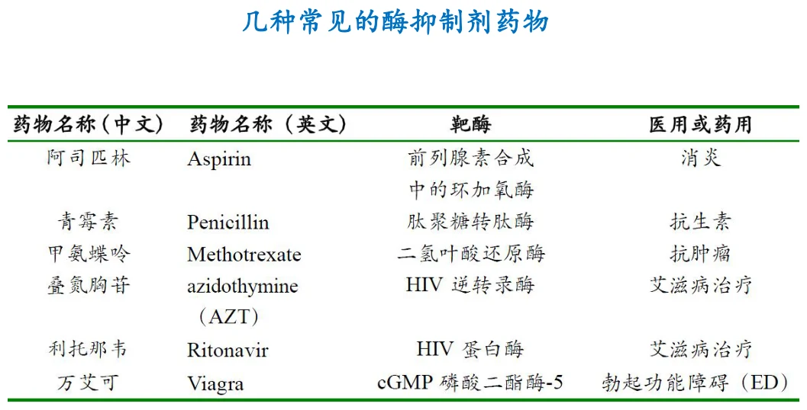
图源：第10章 PPT 第 17 页。几种常见的酶抑制剂药物——抑制剂动力学不是理论游戏，而是药物设计的基础。
7. 不可逆性抑制剂的四种类型
课件按作用机制把不可逆抑制剂分成四类，这个分类的核心维度是“抑制剂最初是否像底物”和“是否需要酶自己把它激活”。
| 类型 | 结构特点 | 作用机制 |
|---|---|---|
| ① 基团特异性抑制剂 | 与底物无相似之处 | 能共价修饰酶活性中心上的必需侧链基团，导致不可逆失活。由于许多氨基酸残基含有亲核侧链基团，所以充当这类抑制剂的一般是亲电试剂 |
| ② 底物类似物抑制剂 | 结构上相似于底物 | 因此能在活性中心与酶结合，然后不可逆地修饰活性中心上的必需基团，导致酶活性丧失 |
| ③ 过渡态类似物抑制剂 | 与酶促反应的过渡态极为相似 | 在化学结构和分子形状上与活性中心十分般配，能以极高的亲和力与活性中心结合，从而导致底物无法进入而不可逆抑制 |
| ④ 自杀型抑制剂 课件原文：“农夫与蛇的故事” | 本身不具反应性 | 受酶本身的激活：与酶结合后，受到酶的催化发生几步反应，但并不形成产物，而是变成高度反应性的化合物，转而修饰酶的必需基团，导致酶活性丧失 |
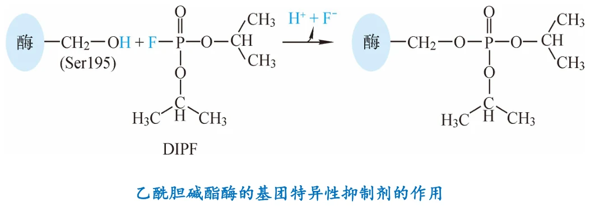
图源：第10章 PPT 第 24 页。乙酰胆碱酯酶的基团特异性抑制剂的作用。
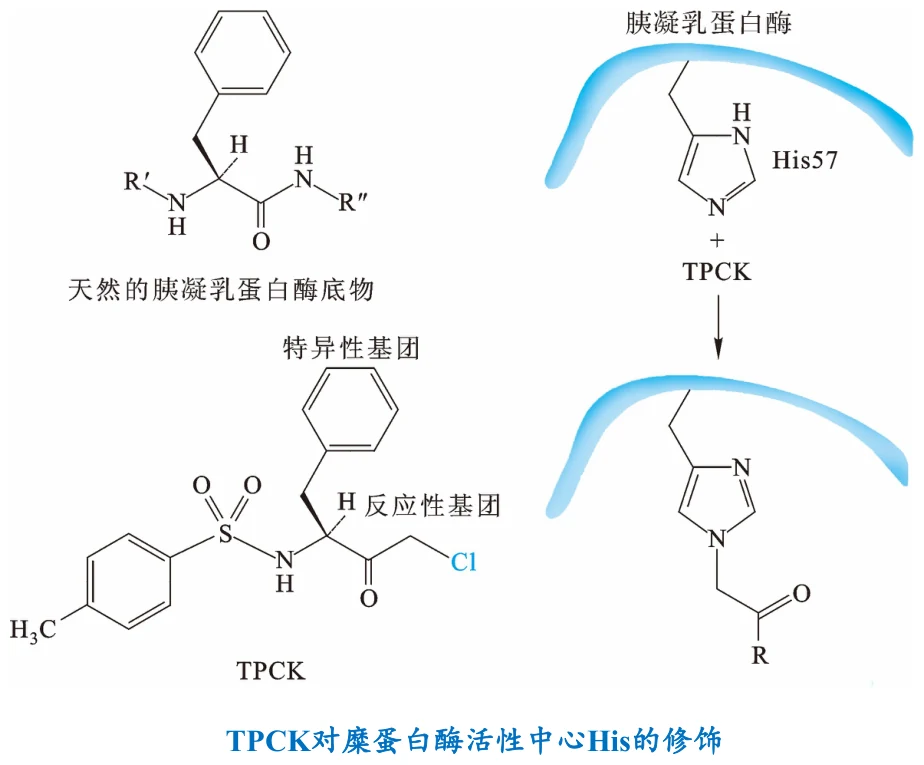
图源：第10章 PPT 第 25 页。TPCK 对糜蛋白酶活性中心 His 的修饰——底物类似物型不可逆抑制剂：先像底物一样结合，再共价修饰。
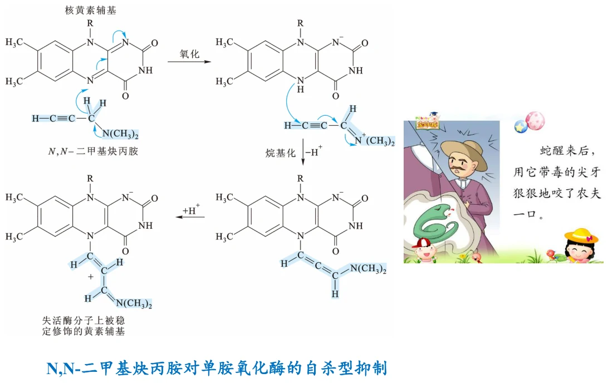
图源：第10章 PPT 第 26 页。N,N-二甲基炔丙胺对单胺氧化酶的自杀型抑制——酶亲自把抑制剂“加工”成了灭活自己的武器。
为什么“自杀型”这个比喻很准确
课件用“农夫与蛇”来形容这类抑制剂，抓住了机制的要害：酶把抑制剂当成底物结合并催化它，结果催化产物反过头来灭活了酶。它的选择性因此极高——只有真正能催化这个反应的酶才会被灭活，其他酶即使结合了抑制剂也不会把它转化成活性形式。
这个特征在药物设计中极有价值：自杀型抑制剂（机制基础性抑制剂）只作用于特定靶酶，副作用小。临床上的单胺氧化酶抑制剂、某些抗病毒药与抗生素都属于这一类。
注意它与“过渡态类似物”的区别：过渡态类似物靠“像过渡态”获得高亲和力，本身已经是有反应性的分子；自杀型抑制剂本身不活泼，是被酶当场激活的。
8. 别构酶的动力学
前面所有讨论都建立在米氏方程上，而米氏方程给出的是双曲线。但有一类酶的 [S] 曲线是 S 形的——米氏方程不适合描述它们，需要换用 Hill 方程。
8.1 别构酶的性质（六条）
| 性质 | 含义 |
|---|---|
| 速率/底物浓度曲线为 S 型 | 曲线的核心特征，说明存在底物协同性。这直接排除了米氏方程 |
| 具有别构效应物 | 活性受其他分子（效应物）调节，效应物结合在活性中心之外的别构位点 |
| 对竞争性抑制表现双相反应 | 动力学行为比米氏酶复杂，不能简单套用竞争性抑制的规律 |
| 温和变性可导致别构效应丧失 | 说明别构效应依赖完整的四级结构；而催化活性中心本身可能仍保留——这证明“别构”是比“催化”更容易被破坏的更高层次性质 |
| 通常是寡聚酶 | 由多个亚基组成——协同性需要亚基之间传递构象变化，这是结构基础 |
| 与非别构酶相比占少数 | 别构酶是特例，但常常是关键调控点 |
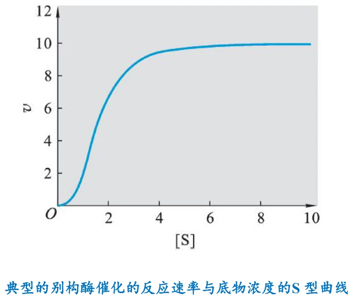
图源：第10章 PPT 第 28 页。典型的别构酶 S 型曲线——注意它在一段浓度区间内非常陡峭，这正是协同性的意义所在。
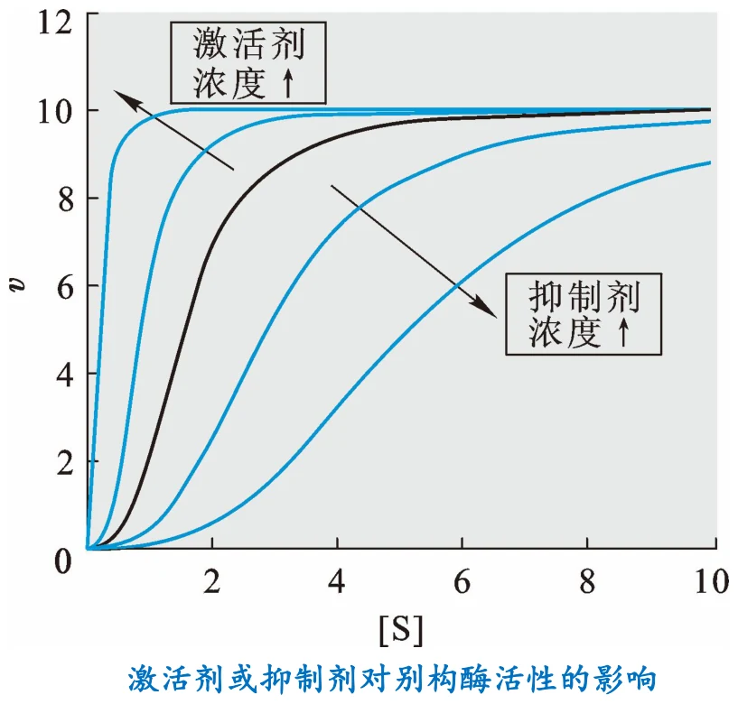
图源：第10章 PPT 第 29 页。激活剂使曲线更陡、向低 [S] 方向移动；抑制剂则相反。
8.2 Hill 方程
Hill 方程能够很好地说明别构酶的动力学：
v = Vmax[S]ʰ / (K₀.₅ʰ + [S]ʰ)
Hill 方程与米氏方程十分相似，主要差别有两处：
[S] 变为 [S]ʰ，h 称为 Hill 系数。这个“指数”就是协同性的数学表达——[S] 的变化被放大了 h 倍。
K₀.₅ 也被提高到 h 次幂。它与 Km 相似，也是指速率为最大速率一半时的底物浓度。
Hill 系数反映底物协同性的程度：
| h | 含义 | 曲线形状 | 与米氏方程的关系 |
|---|---|---|---|
| h = 1 | 无底物协同性，不是别构酶 | 双曲线 | Hill 方程与米氏方程一模一样，K₀.₅ = Km |
| h > 1 | 正底物协同性 | S 形曲线 | 米氏方程无法描述 |
| h < 1 | 负底物协同性 | 比双曲线更平缓 | 米氏方程无法描述 |
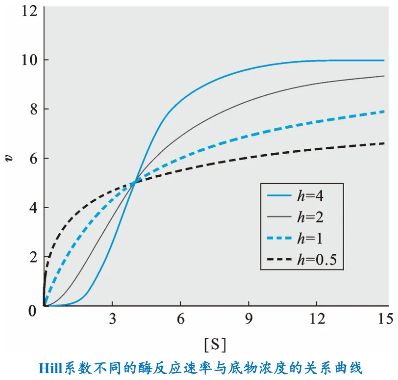
图源：第10章 PPT 第 31 页。这四条曲线共用同一个 K₀.₅（都交于 v = Vmax/2 处），唯一变量是 h。h=4 呈明显 S 形，h=1 是标准双曲线，h=0.5 则比双曲线更平缓。这张图是理解 Hill 系数的最好工具。
8.3 Hill 作图
把 Hill 方程重新整理并两边取对数：
lg[v/(Vmax − v)] = h·lg[S] − h·lg K₀.₅
以 lg[v/(Vmax − v)] 对 lg[S] 作图，得到一条直线：
| 图上的量 | 等于 |
|---|---|
| 斜率 | h（Hill 系数） |
| 纵截距 | −h·lg K₀.₅ |
| 横截距 | lg K₀.₅ |
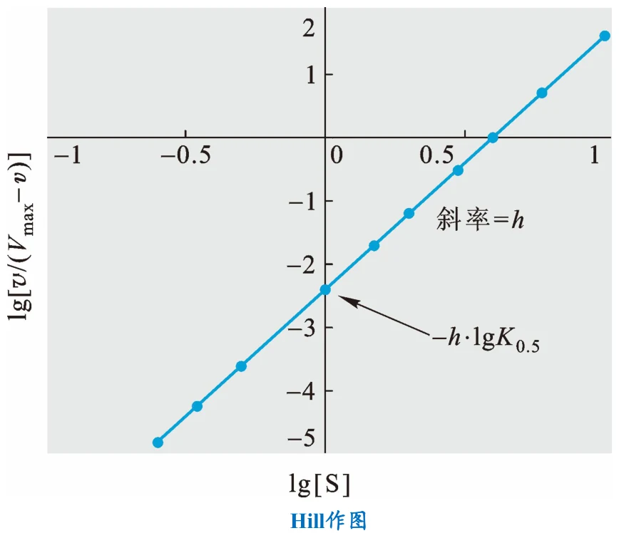
图源：第10章 PPT 第 33 页。Hill 作图——与双倒数作图同样的思路：把曲线转成直线，让参数落在斜率和截距上。
两个作图的共同逻辑
双倒数作图和 Hill 作图做的是同一件事：通过代数变换把非线性方程变成线性方程，使参数可以从斜率与截距直接读出。区别只在于变换的目的不同——双倒数是为了让 Km 和 Vmax 可测，Hill 作图是为了让 h 和 K₀.₅ 可测。把这个统一逻辑记住，两套公式就不必分别死记。
另外要注意，Hill 作图在实测中直线往往只在中间一段成立，两端会偏离。原因是：极低 [S] 时协同性尚未启动，极高 [S] 时已全部饱和。所以 h 是“表观协同性系数”，通常小于真实的结合位点数 n——它反映的是协同作用的强度，而不是位点数目。
8.4 协同性的优点
课件用具体的倍数说明了协同性的意义。
对于无协同性的米氏酶，把反应速率从 Vmax 的 10% 增加到 90% 需要较大的底物浓度增加。正协同效应意味着酶对环境中底物浓度的变化更为敏感——浓度稍变，速率就大幅变化。这使得机体内某些重要的调节酶能够根据环境变化对代谢进行更加灵敏的调节。
呈现负协同效应的别构酶（h = 0.5）要把反应速率从 Vmax 的 10% 增加到 90%，需要将底物浓度提高 6561 倍。如此大幅度的提高意味着该酶对底物浓度的变化极度不敏感——即速率在很宽的底物浓度范围内保持稳定。
为什么两种“相反”的性质都有用
这看似矛盾，实则对应两种不同的调控需求：
正协同（h > 1）适合做“开关”——需要在某个浓度阈值附近迅速响应，比如糖酵解和糖异生的关键调节酶，或者血红蛋白在肺部与外周组织之间的氧结合/释放。S 形曲线的陡峭段就是一个灵敏的“分子开关”。
负协同（h < 1）适合做“缓冲”——需要速率在底物浓度大幅波动时保持稳定。6561 倍这个数字（3⁸ = 6561，对应 10% 与 90% 的比值 9 的 8 次方关系）显示了负协同酶可以多么“迟钝”，这对维持代谢稳态很有利。
同一个数学特征（h 偏离 1）向两个方向偏离，各自服务于不同的生理需要——这是本章最能体现“结构服务于功能”的一点。
9. 复习清单
- 影响酶促反应速率的五类因素是什么？其中哪两类呈钟形曲线？
- 为什么[S] 曲线的形状本身就是重要的实验信息？双曲线与 S 形曲线各说明什么？
- 米氏模型是哪两位科学家在哪一年提出的？
- 推导米氏方程的三个前提是什么？“初速率”为什么要单独限定？
- 写出 νf 与 νd 的表达式，并说明稳态近似的具体含义。
- Km 的定义式是什么？它为什么不等于解离常数 Ks？两者何时近似相等？
- 写出米氏方程的最终形式，并说明 Vmax 与 k₂、[Eₜ] 的关系。
- Km 的定义（用 Vmax 表述）是什么？Km 越小说明亲和力怎样？
- 怎样用 Km 判断可逆反应的方向？背后的直觉是什么？
- Vmax 与 Km 哪一个随酶浓度变化？为什么？
- kcat 的另两个名称是什么？单位是什么？物理意义是什么？
- 为什么说 kcat/Km 才是真正的效率指标？它为什么有理论上限？达到上限的酶叫什么？
- 米氏方程的双重性指什么？两种极限各自的动力学级数？
- 为什么比较 kcat/Km 和比较 Vmax 需要选不同的 [S] 区间？
- 双倒数作图的斜率、纵截距、横截距分别等于什么？
- 双倒数作图有什么代价？为什么判断抑制类型时仍首选它？
- 可逆与不可逆抑制剂的划分标准是什么？为什么阿司匹林药效能持续数天？
- 三类可逆抑制剂各自结合谁？由此推出的 Km 与 Vmax 变化是什么？
- 为什么反竞争性抑制的双倒数图是一组平行线？
- 不可逆抑制剂分四类？各有什么结构特点与作用机制？
- 过渡态类似物与自杀型抑制剂的关键区别是什么？
- 别构酶的六条性质是什么？“温和变性导致别构效应丧失”说明了什么？
- Hill 方程与米氏方程的两处差别是什么？
- h = 1、h > 1、h < 1 各说明什么？h = 1 时 Hill 方程与米氏方程是什么关系？
- Hill 作图的斜率与截距各等于什么？
- 为什么 h 通常小于真实的结合位点数？
- 正协同与负协同各有什么生理优势？各适合承担什么角色？
10. 课件提示与待核对项
| 位置 | 课件原文情况 | 整理时的处理 |
|---|---|---|
| 第 9–10 页 | 课件推导中的中间步骤只给出①式与结果，跳过了代入与整理过程；且部分公式以图片形式呈现 | 正文补全了三步推导（稳态近似 → 总量守恒代入 → 解出 [ES]），并把公式重排为可读形式。每一步都可对照课件原页核验 |
| 第 8 页 | 课件写作 “Lenor Michaelis”，姓名拼写有误 | 正文改为正确的 Leonor Michaelis（1875–1949）。课件括注的生卒年为准 |
| 第 11 页 | “Km 可以帮助判断体内一个可逆反应进行的方向。如果酶对底物的 Km 值小于对产物的 Km 值，则反应有利于正反应” | 照录，并补写了直觉解释。这条判据依赖“同一酶催化可逆反应、两侧各有 Km”的前提，请对教材确认适用范围 |
| 第 20–22 页 | 三页的公式以图片形式给出，部分符号被 OCR 打乱（如 “(1+ /(1+[I]/KI)/Vmax”） | 正文按标准形式重写：竞争性表观 Km = Km(1 + [I]/K_I)；反竞争性表观 Km = Km/(1 + [I]/K_I′)，表观 Vmax = Vmax/(1 + [I]/K_I′)。请对课件原图核对符号下标（K_I 与 K_I′ 的用法） |
| 第 22 页 | 反竞争性抑制一页同时给出了直接作图与双倒数作图两套标注 | 正文只保留结论（Km 与 Vmax 同比例降低 ⇒ 平行线），未复现两套标注 |
| 第 34 页 | 负协同部分写“需要将底物浓度提高 6561 倍” | 照录。补充说明 6561 = 3⁸，与 10%→90% 的比值关系一致，便于记忆与验算 |
| 第 8 页 | 提纲写作“米氏方程的双重性”，正文并未使用“双重性”一词 | 正文按提纲用语命名第 4 节，内容对应课件第 13 页的两级动力学极限 |